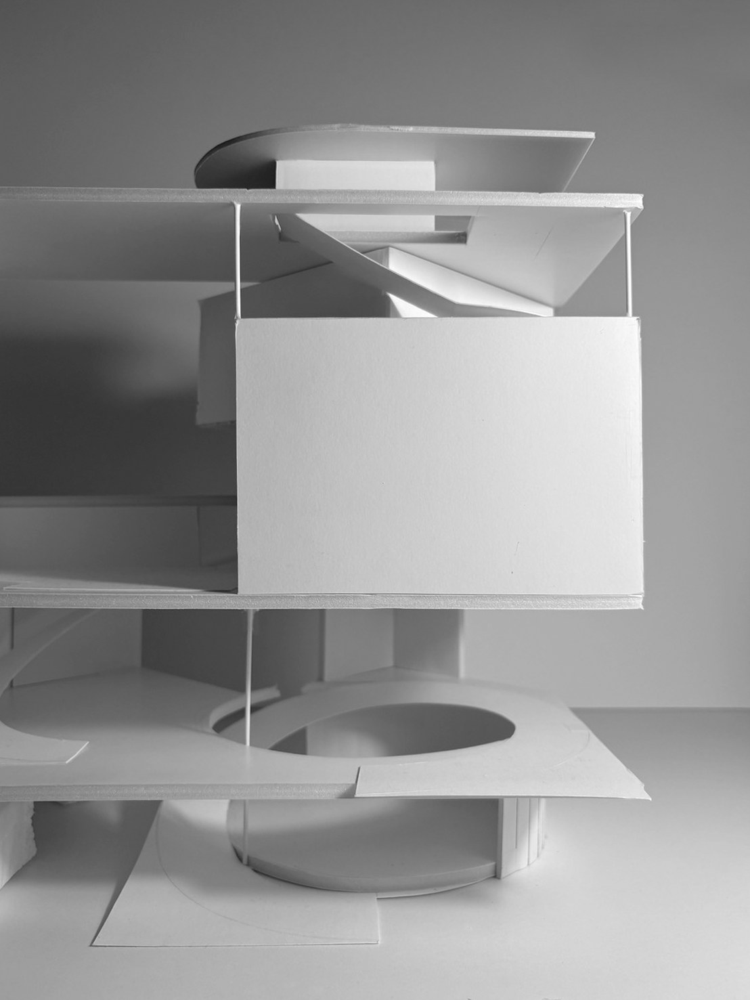
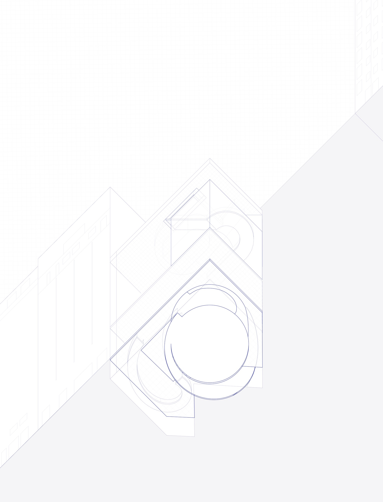
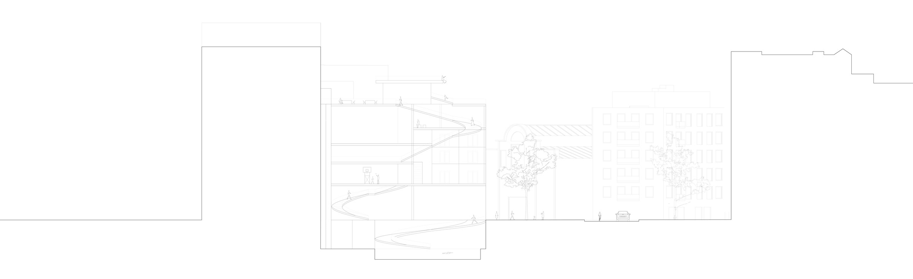

Paral·lel, once home to Theater Broadway, formed a Society of Room through its row of theaters and the terrace seating spilling out onto the street. As theater culture declined over time, Paral·lel — which still shapes part of Barcelona today as the boundary between three districts of differing urban grids — has lost that Room of Agreement. Like a city within the city, this building takes the form of two overlapping spirals: a movement that draws people from the street into the architecture, and in doing so, through a bodily gesture recalling Montjuïc and the funerary rituals once held there, brings them down onto the rooftop as a second ground.
City in the City
Instructor: Mark Cottle, Arnau Pascual, Nuria Arredondo



